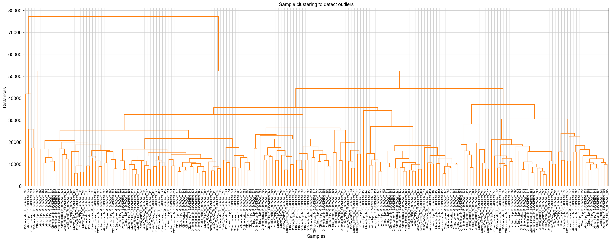
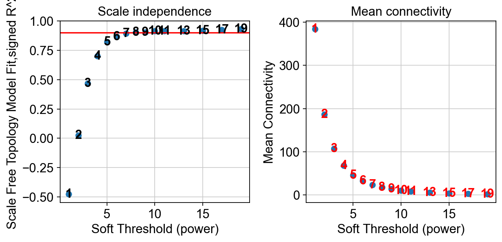
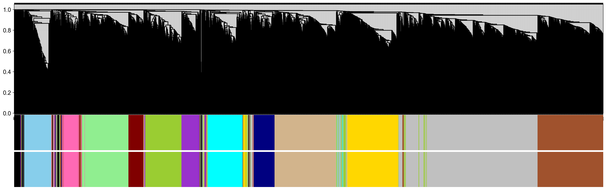
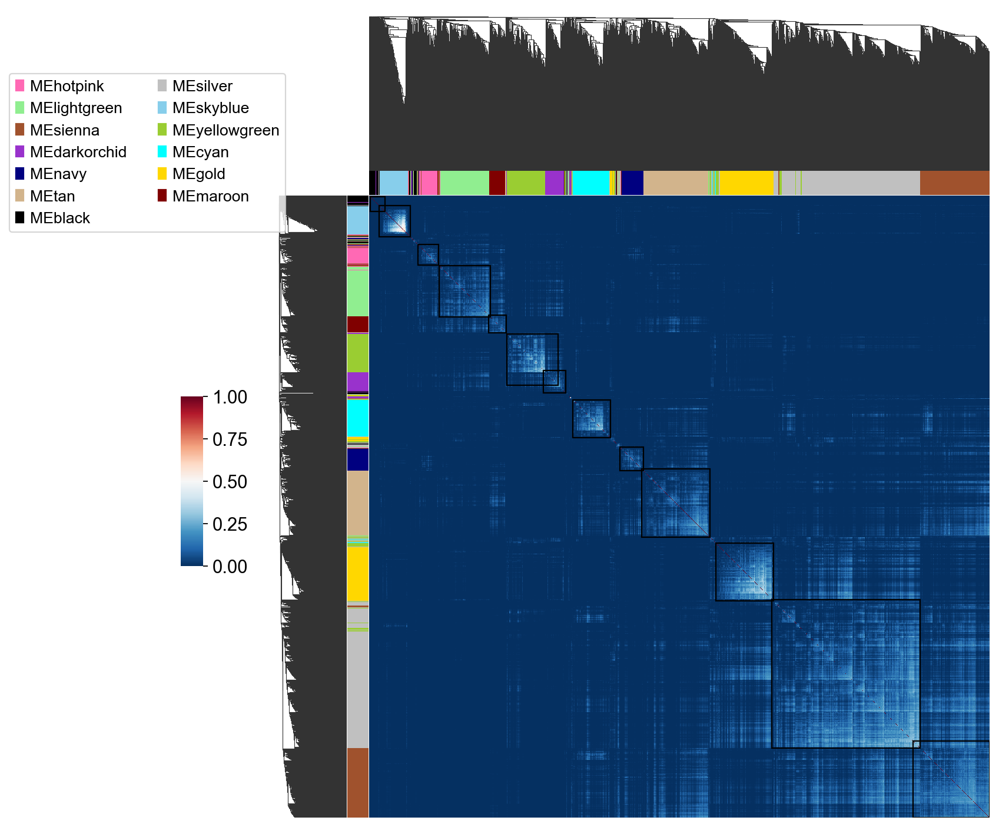
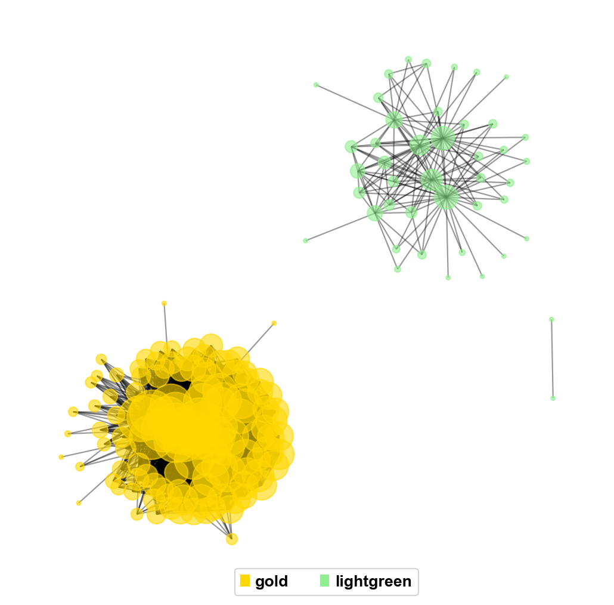
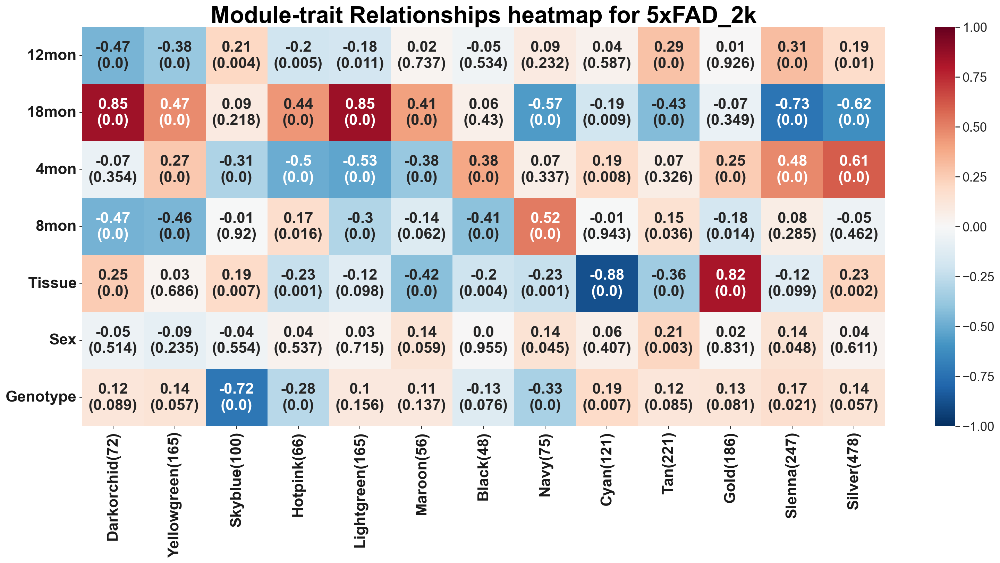

WGCNA (Weighted gene co-expression network analysis) analysis¶
Weighted gene co-expression network analysis (WGCNA) is a systems biology approach to characterize gene association patterns between different samples and can be used to identify highly synergistic gene sets and identify candidate biomarker genes or therapeutic targets based on the endogeneity of the gene sets and the association between the gene sets and the phenotype.
Paper: WGCNA: an R package for weighted correlation network analysis
Narges Rezaie, Farilie Reese, Ali Mortazavi, PyWGCNA: a Python package for weighted gene co-expression network analysis, Bioinformatics, Volume 39, Issue 7, July 2023, btad415, https://doi.org/10.1093/bioinformatics/btad415
Code: Reproduce by Python. Raw is http://www.genetics.ucla.edu/labs/horvath/CoexpressionNetwork/Rpackages/WGCNA
Colab_Reproducibility：https://colab.research.google.com/drive/1EbP-Tq1IwYO9y1_-zzw23XlPbzrxP0og?usp=sharing
Here, you will be briefly guided through the basics of how to use omicverse to perform wgcna anlysis. Once you are set
import scanpy as sc
import omicverse as ov
import matplotlib.pyplot as plt
ov.plot_set()
____ _ _ __
/ __ \____ ___ (_)___| | / /__ _____________
/ / / / __ `__ \/ / ___/ | / / _ \/ ___/ ___/ _ \
/ /_/ / / / / / / / /__ | |/ / __/ / (__ ) __/
\____/_/ /_/ /_/_/\___/ |___/\___/_/ /____/\___/
Version: 1.6.7, Tutorials: https://omicverse.readthedocs.io/
All dependencies are satisfied.
Load the data¶
The analysis is based on the in-built WGCNA tutorial data. All the data can be download from https://github.com/mortazavilab/PyWGCNA/tree/main/tutorials/5xFAD_paper
import pandas as pd
data=ov.utils.read('data/5xFAD_paper/expressionList.csv',
index_col=0)
data.head()
| ENSMUSG00000000003 | ENSMUSG00000000028 | ENSMUSG00000000031 | ENSMUSG00000000037 | ENSMUSG00000000049 | ENSMUSG00000000056 | ENSMUSG00000000058 | ENSMUSG00000000078 | ENSMUSG00000000085 | ENSMUSG00000000088 | ... | ENSMUSG00000118383 | ENSMUSG00000118384 | ENSMUSG00000118385 | ENSMUSG00000118386 | ENSMUSG00000118387 | ENSMUSG00000118388 | ENSMUSG00000118389 | ENSMUSG00000118390 | ENSMUSG00000118391 | ENSMUSG00000118392 | |
|---|---|---|---|---|---|---|---|---|---|---|---|---|---|---|---|---|---|---|---|---|---|
| sample_id | |||||||||||||||||||||
| X4mo_cortex_F_5xFADHEMI_430 | 0.0 | 1.90 | 0.00 | 0.13 | 0.43 | 22.37 | 24.24 | 19.32 | 33.41 | 620.45 | ... | 0.75 | 0.0 | 0.00 | 0.00 | 0.0 | 0.0 | 0.0 | 0.0 | 0.04 | 0.0 |
| X4mo_cortex_F_5xFADHEMI_431 | 0.0 | 1.10 | 0.06 | 0.07 | 0.18 | 16.99 | 24.69 | 23.88 | 31.40 | 705.73 | ... | 0.67 | 0.0 | 0.55 | 0.43 | 0.0 | 0.0 | 0.0 | 0.0 | 0.00 | 0.0 |
| X4mo_cortex_F_5xFADHEMI_433 | 0.0 | 1.18 | 0.07 | 0.13 | 1.90 | 20.37 | 28.06 | 21.33 | 32.14 | 699.50 | ... | 0.91 | 0.0 | 0.00 | 0.19 | 0.0 | 0.0 | 0.0 | 0.0 | 0.02 | 0.0 |
| X4mo_cortex_F_5xFADHEMI_434 | 0.0 | 2.18 | 0.00 | 0.07 | 0.31 | 17.98 | 21.46 | 15.06 | 27.60 | 639.95 | ... | 0.11 | 0.0 | 0.00 | 0.00 | 0.0 | 0.0 | 0.0 | 0.0 | 0.00 | 0.0 |
| X4mo_cortex_F_5xFADHEMI_511 | 0.0 | 1.50 | 0.10 | 0.14 | 0.53 | 18.35 | 20.18 | 18.66 | 26.43 | 640.55 | ... | 0.64 | 0.0 | 1.38 | 0.00 | 0.0 | 0.0 | 0.0 | 0.0 | 0.02 | 0.0 |
5 rows × 55448 columns
from statsmodels import robust #import package
gene_mad=data.apply(robust.mad) #use function to calculate MAD
data=data.T
data=data.loc[gene_mad.sort_values(ascending=False).index[:2000]]
data.head()
| sample_id | X4mo_cortex_F_5xFADHEMI_430 | X4mo_cortex_F_5xFADHEMI_431 | X4mo_cortex_F_5xFADHEMI_433 | X4mo_cortex_F_5xFADHEMI_434 | X4mo_cortex_F_5xFADHEMI_511 | X4mo_cortex_F_5xFADWT_330 | X4mo_cortex_F_5xFADWT_331 | X4mo_cortex_F_5xFADWT_432 | X4mo_cortex_F_5xFADWT_507 | X4mo_cortex_F_5xFADWT_518 | ... | X18mo_hipp_M_5xFADHEMI_567 | X18mo_hipp_M_5xFADHEMI_617 | X18mo_hipp_M_5xFADHEMI_627 | X18mo_hipp_M_5xFADHEMI_640 | X18mo_hipp_M_5xFADHEMI_786 | X18mo_hipp_M_5xFADWT_301 | X18mo_hipp_M_5xFADWT_566 | X18mo_hipp_M_5xFADWT_641 | X18mo_hipp_M_5xFADWT_643 | X18mo_hipp_M_5xFADWT_785 |
|---|---|---|---|---|---|---|---|---|---|---|---|---|---|---|---|---|---|---|---|---|---|
| ENSMUSG00000099250 | 38274.46 | 45547.41 | 40835.79 | 35162.62 | 52371.17 | 42761.19 | 46116.59 | 43595.89 | 50531.39 | 46891.88 | ... | 36696.94 | 59031.53 | 44038.38 | 39537.58 | 43637.47 | 30459.36 | 12742.01 | 32803.24 | 38164.91 | 46018.27 |
| ENSMUSG00000099021 | 38274.46 | 36885.85 | 46409.95 | 41388.72 | 54608.70 | 38940.59 | 52898.07 | 32184.16 | 43387.97 | 42442.50 | ... | 36696.94 | 59031.53 | 37772.09 | 33995.79 | 28730.09 | 30459.36 | 12742.01 | 32803.24 | 38164.91 | 46018.27 |
| ENSMUSG00000064356 | 13048.33 | 13904.76 | 12283.33 | 10654.36 | 11040.40 | 10112.12 | 9930.95 | 14263.90 | 14124.68 | 10331.52 | ... | 26344.45 | 28834.11 | 26020.02 | 29152.34 | 24033.60 | 33013.99 | 35575.40 | 34328.79 | 27952.62 | 23539.78 |
| ENSMUSG00000102070 | 6323.94 | 6086.47 | 6421.64 | 4967.26 | 6173.10 | 6186.12 | 4916.20 | 7770.57 | 5725.27 | 5272.50 | ... | 16.31 | 0.01 | 0.00 | 0.00 | 0.00 | 0.00 | 0.14 | 0.00 | 0.00 | 0.00 |
| ENSMUSG00000064357 | 24524.58 | 25345.63 | 27358.45 | 22902.01 | 20973.69 | 22306.31 | 23962.79 | 25748.21 | 23760.62 | 20068.35 | ... | 22878.69 | 25651.64 | 22606.07 | 25008.25 | 21907.32 | 28164.62 | 30592.58 | 28184.02 | 24615.69 | 24156.82 |
5 rows × 192 columns
#import PyWGCNA
pyWGCNA_5xFAD = ov.bulk.pyWGCNA(name='5xFAD_2k',
species='mus musculus',
geneExp=data.T,
outputPath='',
save=True)
pyWGCNA_5xFAD.geneExpr.to_df().head(5)
Saving data to be True, checking requirements ...
| ENSMUSG00000099250 | ENSMUSG00000099021 | ENSMUSG00000064356 | ENSMUSG00000102070 | ENSMUSG00000064357 | ENSMUSG00000106106 | ENSMUSG00000101111 | ENSMUSG00000064354 | ENSMUSG00000064339 | ENSMUSG00000064337 | ... | ENSMUSG00000032407 | ENSMUSG00000001383 | ENSMUSG00000026965 | ENSMUSG00000021423 | ENSMUSG00000033006 | ENSMUSG00000060371 | ENSMUSG00000045302 | ENSMUSG00000052033 | ENSMUSG00000003166 | ENSMUSG00000022536 | |
|---|---|---|---|---|---|---|---|---|---|---|---|---|---|---|---|---|---|---|---|---|---|
| sample_id | |||||||||||||||||||||
| X4mo_cortex_F_5xFADHEMI_430 | 38274.46 | 38274.46 | 13048.33 | 6323.94 | 24524.58 | 4382.70 | 14720.04 | 5719.72 | 5697.65 | 5512.88 | ... | 16.39 | 117.19 | 68.52 | 43.05 | 12.42 | 43.30 | 79.31 | 35.00 | 57.63 | 86.61 |
| X4mo_cortex_F_5xFADHEMI_431 | 45547.41 | 36885.85 | 13904.76 | 6086.47 | 25345.63 | 6045.83 | 15258.06 | 5484.94 | 6660.83 | 6870.51 | ... | 19.84 | 127.13 | 60.90 | 39.82 | 25.63 | 51.73 | 64.67 | 39.35 | 51.67 | 82.65 |
| X4mo_cortex_F_5xFADHEMI_433 | 40835.79 | 46409.95 | 12283.33 | 6421.64 | 27358.45 | 3611.95 | 16391.84 | 6015.36 | 6529.01 | 6843.43 | ... | 16.08 | 118.16 | 67.46 | 50.15 | 28.76 | 60.93 | 71.49 | 34.67 | 56.30 | 87.20 |
| X4mo_cortex_F_5xFADHEMI_434 | 35162.62 | 41388.72 | 10654.36 | 4967.26 | 22902.01 | 5336.76 | 14207.71 | 6440.73 | 5287.13 | 5244.33 | ... | 14.58 | 113.54 | 59.20 | 31.26 | 34.34 | 67.71 | 61.14 | 31.38 | 56.13 | 76.05 |
| X4mo_cortex_F_5xFADHEMI_511 | 52371.17 | 54608.70 | 11040.40 | 6173.10 | 20973.69 | 7221.82 | 13444.75 | 4451.85 | 5671.34 | 6160.46 | ... | 17.60 | 116.65 | 61.78 | 28.27 | 34.48 | 66.95 | 64.82 | 22.43 | 58.19 | 78.15 |
5 rows × 2000 columns
Pre-processing workflow¶
PyWGCNA allows you to easily preproces the data including removing genes with too many missing values or lowly-expressed genes across samples (by default we suggest to remove genes without that are expressed below 1 TPM) and removing samples with too many missing values. Keep in your mind that these options can be adjusted by changing TPMcutoff and cut
pyWGCNA_5xFAD.preprocess()
Pre-processing...
Detecting genes and samples with too many missing values...
Done pre-processing..
{kind=link}

Construction of the gene network and identification of modules¶
PyWGCNA compresses all the steps of network construction and module detection in one function called findModules which performs the following steps:
Choosing the soft-thresholding power: analysis of network topology
Co-expression similarity and adjacency
Topological Overlap Matrix (TOM)
Clustering using TOM
Merging of modules whose expression profiles are very similar
In this tutorial, we will perform the analysis step by step.
pyWGCNA_5xFAD.calculate_soft_threshold()
Run pyWGCNA...
pickSoftThreshold: calculating connectivity for given powers...
will use block size 2000
Power SFT.R.sq slope truncated R.sq mean(k) median(k) \
0 1 0.475634 0.858089 0.916615 384.051226 365.47651
1 2 0.024359 -0.12182 0.744927 187.032023 156.365157
2 3 0.467144 -0.639564 0.811331 107.526153 82.679754
3 4 0.700621 -0.901753 0.891559 68.076955 49.542257
4 5 0.822088 -1.08531 0.951344 45.940993 31.233385
5 6 0.865329 -1.199273 0.964283 32.453619 21.109319
6 7 0.891881 -1.25357 0.981805 23.73344 14.598084
7 8 0.902572 -1.323021 0.98498 17.836142 10.342337
8 9 0.902377 -1.373948 0.978787 13.70429 7.363482
9 10 0.914352 -1.389264 0.986473 10.725253 5.465437
10 11 0.913148 -1.411199 0.985258 8.525814 4.015487
11 13 0.914821 -1.453348 0.985572 5.599609 2.303557
12 15 0.915594 -1.462192 0.975418 3.834091 1.385649
13 17 0.924773 -1.464537 0.983127 2.71403 0.8921
14 19 0.929837 -1.472707 0.985362 1.974494 0.574689
max(k)
0 693.078408
1 435.524992
2 307.107883
3 229.135821
4 177.363314
5 140.898711
6 114.120987
7 94.281721
8 78.981805
9 66.861011
10 57.108349
11 42.602877
12 32.562859
13 25.38005
14 20.226308
Selected power to have scale free network is 8.
{kind=link}

pyWGCNA_5xFAD.calculating_adjacency_matrix()
calculating adjacency matrix ...
Done..
pyWGCNA_5xFAD.calculating_TOM_similarity_matrix()
calculating TOM similarity matrix ...
Done..
Building a network of co-expressions¶
We use the dynamicTree to build the co-expressions module basing TOM matrix
pyWGCNA_5xFAD.calculate_geneTree()
pyWGCNA_5xFAD.calculate_dynamicMods(kwargs_function={'cutreeHybrid': {'deepSplit': 2, 'pamRespectsDendro': False}})
pyWGCNA_5xFAD.calculate_gene_module(kwargs_function={'moduleEigengenes': {'softPower': 8}})
Going through the merge tree...
..cutHeight not given, setting it to 0.9970417414225616 ===> 99% of the (truncated) height range in dendro.
..done.
Calculating 13 module eigengenes in given set...
Done..
mergeCloseModules: Merging modules whose distance is less than 0.2
fixDataStructure: data is not a Dictionary: converting it into one.
multiSetMEs: Calculating module MEs.
Working on set 1 ...
Calculating 13 module eigengenes in given set...
Done..
Calculating new MEs...
multiSetMEs: Calculating module MEs.
Working on set 1 ...
Calculating 13 module eigengenes in given set...
Done..
Calculating 13 module eigengenes in given set...
Done..
fixDataStructure: data is not a Dictionary: converting it into one.
orderMEs: order not given, calculating using given set 0
{kind=link}

pyWGCNA_5xFAD.plot_matrix(save=False)
<seaborn.matrix.ClusterGrid at 0x7f1851de79d0>
{kind=link}

Saving and loading your PyWGCNA¶
You can save or load your PyWGCNA object with the saveWGCNA() or readWGCNA() functions respectively.
pyWGCNA_5xFAD.saveWGCNA()
Saving WGCNA as 5xFAD_2k.p
pyWGCNA_5xFAD=ov.bulk.readWGCNA('5xFAD_2k.p')
Reading 5xFAD_2k WGCNA done!
pyWGCNA_5xFAD.mol.head()
| ivl | module | name | dynamo_color | module_color | |
|---|---|---|---|---|---|
| 0 | 682 | 0 | ENSMUSG00000065947 | black | black |
| 1 | 111 | 0 | ENSMUSG00000077990 | black | black |
| 2 | 1124 | 0 | ENSMUSG00000096768 | black | black |
| 3 | 1663 | 0 | ENSMUSG00000110669 | black | black |
| 4 | 24 | 0 | ENSMUSG00000105145 | black | black |
pyWGCNA_5xFAD.datExpr.var.head()
| dynamicColors | moduleColors | moduleLabels | |
|---|---|---|---|
| ENSMUSG00000099250 | hotpink | hotpink | 4 |
| ENSMUSG00000099021 | hotpink | hotpink | 4 |
| ENSMUSG00000064356 | lightgreen | lightgreen | 5 |
| ENSMUSG00000102070 | sienna | sienna | 8 |
| ENSMUSG00000064357 | darkorchid | darkorchid | 2 |
Sub co-expression module¶
Sometimes we are interested in a gene, or a module of a pathway, and we need to extract the sub-modules of the gene for analysis and mapping. For example, we have selected two modules, 6 and 12, as sub-modules for analysis
sub_mol=pyWGCNA_5xFAD.get_sub_module(['gold','lightgreen'],
mod_type='module_color')
sub_mol.head(),sub_mol.shape
( ivl module name dynamo_color module_color
24 23 4 ENSMUSG00000015090 gold gold
133 1694 6 ENSMUSG00000006412 lightgreen lightgreen
143 83 6 ENSMUSG00000060143 lightgreen lightgreen
144 829 6 ENSMUSG00000020857 lightgreen lightgreen
153 274 6 ENSMUSG00000080921 lightgreen lightgreen,
(351, 5))
We found a total of 151 genes for ‘gold’ and ‘lightgreen’. Next, we used the scale-free network constructed earlier, with the threshold set to 0.95, to construct a gene correlation network graph for modules ‘gold’ and ‘lightgreen’
G_sub=pyWGCNA_5xFAD.get_sub_network(mod_list=['lightgreen'],
mod_type='module_color',correlation_threshold=0.2)
G_sub
<networkx.classes.graph.Graph at 0x7f184da05b10>
len(G_sub.edges())
137
pyWGCNA provides a simple visualisation function plot_sub_network to visualise the gene-free network of our interest.
pyWGCNA_5xFAD.plot_sub_network(['gold','lightgreen'],pos_type='kamada_kawai',pos_scale=10,pos_dim=2,
figsize=(8,8),node_size=10,label_fontsize=8,correlation_threshold=0.2,
label_bbox={"ec": "white", "fc": "white", "alpha": 0.6})
(<Figure size 640x640 with 1 Axes>, <AxesSubplot: >)
{kind=link}

We also can merge two previous steps by calling runWGCNA() function.
Updating sample information and assiging color to them for dowstream analysis¶
pyWGCNA_5xFAD.updateSampleInfo(path='data/5xFAD_paper/sampleInfo.csv', sep=',')
# add color for metadata
pyWGCNA_5xFAD.setMetadataColor('Sex', {'Female': 'green',
'Male': 'yellow'})
pyWGCNA_5xFAD.setMetadataColor('Genotype', {'5xFADWT': 'darkviolet',
'5xFADHEMI': 'deeppink'})
pyWGCNA_5xFAD.setMetadataColor('Age', {'4mon': 'thistle',
'8mon': 'plum',
'12mon': 'violet',
'18mon': 'purple'})
pyWGCNA_5xFAD.setMetadataColor('Tissue', {'Hippocampus': 'red',
'Cortex': 'blue'})
note: For doing downstream analysis, we keep aside the Gray modules which is the collection of genes that could not be assigned to any other module.
Relating modules to external information and identifying important genes¶
PyWGCNA gather some important analysis after identifying modules in analyseWGCNA() function including:
Quantifying module–trait relationship
Gene relationship to trait and modules
Keep in your mind before you start analysis to add any sample or gene information.
For showing module relationship heatmap, PyWGCNA needs user to choose and set colors from Matplotlib colors for metadata by using setMetadataColor() function.
You also can select which data trait in which order you wish to show in module eigengene heatmap
pyWGCNA_5xFAD.analyseWGCNA()
Analysing pyWGCNA...
Calculating module trait relationship ...
Done..
Adding (signed) eigengene-based connectivity (module membership) ...
Done..
'Done'
{kind=link}

metadata = pyWGCNA_5xFAD.datExpr.obs.columns.tolist()
pyWGCNA_5xFAD.plotModuleEigenGene('lightgreen', metadata, show=True)
array([[<AxesSubplot: title={'center': 'Module Eigengene for lightgreen'}>,
<AxesSubplot: >],
[<AxesSubplot: ylabel='eigengeneExp'>, <AxesSubplot: >],
[<AxesSubplot: xlabel='sample_id'>, <AxesSubplot: >]], dtype=object)

pyWGCNA_5xFAD.barplotModuleEigenGene('lightgreen', metadata, show=True)
{kind=link}
Finding hub genes for each modules¶
you can also ask about hub genes in each modules based on their connectivity by using top_n_hub_genes() function.
It will give you dataframe sorted by connectivity with additional gene information you have in your expression data.
pyWGCNA_5xFAD.top_n_hub_genes(moduleName="lightgreen", n=10)
calculating adjacency matrix ...
Done..
| connectivity | dynamicColors | moduleColors | moduleLabels | |
|---|---|---|---|---|
| ENSMUSG00000030647 | 21.795590 | lightgreen | lightgreen | 5 |
| ENSMUSG00000014313 | 19.976527 | lightgreen | lightgreen | 5 |
| ENSMUSG00000017778 | 19.927416 | lightgreen | lightgreen | 5 |
| ENSMUSG00000021520 | 19.277455 | lightgreen | lightgreen | 5 |
| ENSMUSG00000039221 | 18.339987 | lightgreen | lightgreen | 5 |
| ENSMUSG00000078784 | 18.180421 | lightgreen | lightgreen | 5 |
| ENSMUSG00000045996 | 18.124036 | lightgreen | lightgreen | 5 |
| ENSMUSG00000052033 | 16.840824 | lightgreen | lightgreen | 5 |
| ENSMUSG00000071528 | 16.746133 | lightgreen | lightgreen | 5 |
| ENSMUSG00000026154 | 16.186290 | lightgreen | lightgreen | 5 |